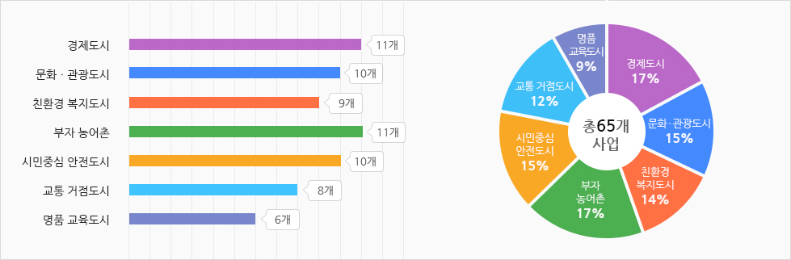

열린시장실
열린시장실
전체메뉴열기 건강한 도시, 행복한 보령을 위해 앞장서겠습니다.
민선7기 공약사항
분야별 현황

(단위 : 건)
| 계 | 경제도시 | 문화ㆍ관광도시 | 친환경 복지도시 | 부자 농어촌 | 시민중심 안전도시 | 교통 거점도시 | 명품 교육도시 |
|---|---|---|---|---|---|---|---|
| 65 | 11 | 10 | 9 | 11 | 10 | 8 | 6 |
완료시기별
(단위 : 건)
| 계 | 임기내 | 임기후 | 비고 |
|---|---|---|---|
| 65 | 53 | 12 |
사업주체별
(단위 : 건)
| 계 | 국가사업 | 도사업 | 자체사업 | 비고 |
|---|---|---|---|---|
| 65 | 5 | 2 | 58 |
유형별
(단위 : 건)
| 계 | 신규 | 지속(기추진) |
|---|---|---|
| 65 | 51 | 14 |
예산별
(단위 : 건)
| 계 | 예산사업 | 비예산사업 | 비고 |
|---|---|---|---|
| 65 | 63 | 2 |
재원별
(단위 : 백만원)
| 분야별 | 계 | 국비 | 도비 | 시비 | 민간 | 기타 |
|---|---|---|---|---|---|---|
| 계 | 7,467,530 | 6,985,276 | 61,751.5 | 310,435.5 | 85,400 | 24,667 |
| 경제도시 | 434,658 | 346,312 | 9,327- | 78,717- | - | 302 |
| 문화관광도시 | 174,873 | 55,500 | 8,750 | 26,223 | 80,000 | 4,400 |
| 친환경복지도시 | 179,426 | 40,092 | 9,298.5 | 124,635.5 | 5,400 | - |
| 부자농어촌 | 96,401 | 31,603 | 20,733 | 24,100 | - | 19,965 |
| 시민중심안전도시 | 17,141 | 5,962 | 2,735 | 8,444 | - | - |
| 교통거점도시 | 6,540,804 | 6,502,132 | 7,379 | 31,293 | - | - |
| 명품교육도시 | 24,227 | 3,675 | 3,529 | 17,023 | - | - |
부서별
| 부서명 | 공약수 | 비고 | 부서명 | 공약수 | 비고 |
|---|---|---|---|---|---|
| 자치행정과 | 1 | 도로과 | 5 | ||
| 안전총괄과 | 1 | 교통과 | 2 | ||
| 교육체육과 | 6 | 산림공원과 | 2 | ||
| 문화새마을과 | 1 | 해양정책과 | 8 | ||
| 사회복지과 | 5 | 관광과 | 1 | ||
| 환경보호과 | 3 | 미래사업과 | 7 | ||
| 지역경제과 | 8 | 수산과 | 4 | ||
| 건설과 | 1 | 보건소 | 4 | ||
| 도시재생과 | 1 | 농업기술센터 | 5 |
분야별 공약
풍요로운 미래를 선도하는 활력 있는 경제도시
| 구분 | 공약명 | 다운로드 | 완료시기 | 유형 | 사업주체 |
|---|---|---|---|---|---|
| 1 | 우량기업 유치 | Download | 임기내 | 지속 | 자체 |
| 2 | 다양한 시책발굴을 통한 청년일자리 창출 | Download | 임기내 | 신규 | 자체 |
| 3 | 기업투자유치기금 100억원 조성 | Download | 임기내 | 지속 | 자체 |
| 4 | 소상공인, 청년 창업가 지원 통합시스템 구축 | Download | 임기내 | 신규 | 자체 |
| 5 | 문화의 전당에 문화 발전소 조성 | Download | 임기내 | 신규 | 자체 |
| 6 | 「3색5미」 전통시장 활성화 | Download | 임기내 | 신규 | 자체 |
| 7 | 경찰서 이전부지 복합 업무타운 건립 | Download | 임기후 | 신규 | 자체 |
| 8 | 쇗개포구 관광야시장 개설 | Download | 임기내 | 신규 | 자체 |
| 9 | 보령항 개항지정에 따른 정부기관 유치 | Download | 임기내 | 신규 | 자체 |
| 10 | 보령신항 다기능 복합항만 건설 | Download | 임기후 | 지속 | 도 |
| 11 | 건설기계 공영주기장 조성 | Download | 임기내 | 신규 | 자체 |
역사와 문화가 살아 숨 쉬는 세계적인 문화ㆍ관광도시
| 구분 | 공약명 | 다운로드 | 완료시기 | 유형 | 사업주체 |
|---|---|---|---|---|---|
| 1 | 2022보령해양머드박람회 성공 개최 | Download | 임기내 | 신규 | 자체 |
| 2 | 국제수준의 해양레저 복합단지 조성 | Download | 임기후 | 신규 | 자체 |
| 3 | 원산도 산림해양치유센터 조성 | Download | 임기후 | 신규 | 자체 |
| 4 | 서해낙조전망대 건립, 야경명소 개발 | Download | 임기내 | 신규 | 자체 |
| 5 | 성주산 모노레일 설치 | Download | 임기내 | 지속 | 자체 |
| 6 | 성주산 숲 하늘길 걷기 체험시설 | Download | 임기내 | 신규 | 자체 |
| 7 | 성주산 캠핑시설 설치 | Download | 임기내 | 신규 | 자체 |
| 8 | 원산도 주변 5개 도서 관광테마 용역 | Download | 임기내 | 신규 | 자체 |
| 9 | 무창포 ~ 석대도 관광케이블카 설치 | Download | 임기후 | 신규 | 자체 |
| 10 | 성주산 낙조전망대 설치 | Download | 임기내 | 신규 | 자체 |
개발과 보존이 조화를 이루는 따뜻한 친환경 복지도시
| 구분 | 공약명 | 다운로드 | 완료시기 | 유형 | 사업주체 |
|---|---|---|---|---|---|
| 1 | 전세대 및 기업용 전기요금 지원 | Download | 임기내 | 신규 | 자체 |
| 2 | 대천해수욕장, 대천항 도시가스 공급지역 확대 | Download | 임기내 | 신규 | 자체 |
| 3 | 시민 힐링 대규모 도시공원 조성 | Download | 임기후 | 신규 | 자체 |
| 4 | 보령시립도서관 건립 | Download | 임기내 | 신규 | 자체 |
| 5 | 가족지원센터 건립(여성ㆍ어린이회관 기능 수행) | Download | 임기내 | 신규 | 자체 |
| 6 | 치매안심센터ㆍ치매병원 운영 | Download | 임기내 | 신규 | 자체 |
| 7 | 종합복지타운 건립 | Download | 임기내 | 지속 | 자체 |
| 8 | 청정바다 가꾸기 프로젝트 | Download | 임기내 | 신규 | 자체 |
| 9 | 경로당 운영지원 확대 | Download | 임기내 | 지속 | 자체 |
살기좋고 경쟁력을 갖춘 살맛나는 부자 농ㆍ어촌
| 구분 | 공약명 | 다운로드 | 완료시기 | 유형 | 사업주체 |
|---|---|---|---|---|---|
| 1 | 보령 해삼특구 지정 | Download | 임기내 | 신규 | 자체 |
| 2 | 만세버섯산업특구 지원 활성화 | Download | 임기내 | 지속 | 자체 |
| 3 | 농산물 종합가공지원센터 건립 | Download | 임기내 | 신규 | 자체 |
| 4 | 자연학습 식물원 조성 | Download | 임기내 | 신규 | 자체 |
| 5 | 도서양식장 상시 감시단속체계 구축 | Download | 임기내 | 신규 | 자체 |
| 6 | 치어방류, 종패 보급 확대 | Download | 임기내 | 신규 | 자체 |
| 7 | 어민 그물 수선장(7만2천㎡) 조성 | Download | 임기내 | 신규 | 자체 |
| 8 | 연안여객선 이용 도서민 숙박비 지원 | Download | 임기내 | 신규 | 자체 |
| 9 | 낙후된 여객선 접안시설 개선 | Download | 임기내 | 신규 | 자체 |
| 10 | 농촌인력지원센터 설립운영 | Download | 임기내 | 신규 | 자체 |
| 11 | 가뭄 극복 양수저류시설 설치 | Download | 임기내 | 신규 | 자체 |
건강하고 활기찬 시민중심의 안전도시
| 구분 | 공약명 | 다운로드 | 완료시기 | 유형 | 사업주체 |
|---|---|---|---|---|---|
| 1 | 경로당, 어린이집 공기청정기 보급 | Download | 임기내 | 신규 | 자체 |
| 2 | 학교 공기청정기 보급 | Download | 임기내 | 신규 | 도 |
| 3 | 경유자동차 조기폐차 지원 | Download | 임기내 | 지속 | 자체 |
| 4 | 전기자동차 보급 확대 | Download | 임기내 | 지속 | 자체 |
| 5 | 도로변 흡입차량 운행 확대 | Download | 임기내 | 지속 | 자체 |
| 6 | 응급환자 응급실 획기적 개선 | Download | 임기내 | 지속 | 자체 |
| 7 | 전문 소아청소년과 확충 | Download | 임기내 | 신규 | 자체 |
| 8 | 산후 조리비용 지원 | Download | 임기내 | 지속 | 자체 |
| 9 | 시민중심 조직개편 | Download | 임기내 | 신규 | 자체 |
| 10 | 지역안전망 획기적 개선 | Download | 임기내 | 신규 | 국가 |
편리한 사통팔달 교통거점도시
| 구분 | 공약명 | 다운로드 | 완료시기 | 유형 | 사업주체 |
|---|---|---|---|---|---|
| 1 | 보령~대전 고속도로 건설 | Download | 임기후 | 신규 | 국가 |
| 2 | 충청산업문화철도(보령선) 건설 | Download | 임기후 | 신규 | 국가 |
| 3 | 미산 도화담~남포읍내~흑포삼거리 연계 도로 건설 | Download | 임기후 | 신규 | 국가 |
| 4 | 국도21호(주산~웅천) 도로 건설 | Download | 임기후 | 신규 | 국가 |
| 5 | 시도9호(해안도로~대천방조제) 교량건설 | Download | 임기후 | 신규 | 자체 |
| 6 | 원산도~효자도 간 연도교 건설 | Download | 임기후 | 신규 | 자체 |
| 7 | 안여객선 준공영제 도입 | Download | 임기내 | 신규 | 자체 |
| 8 | 시도9호(대천IC~해안도로) 확포장 | Download | 임기내 | 지속 | 자체 |